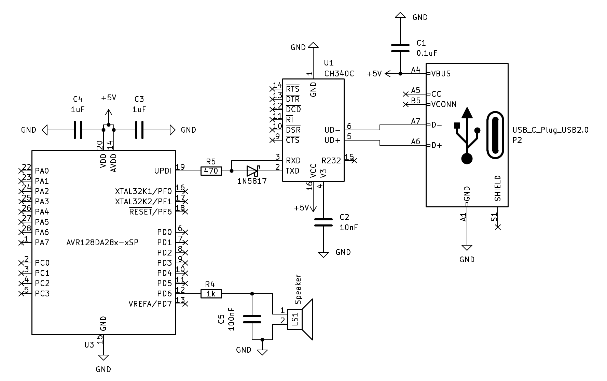
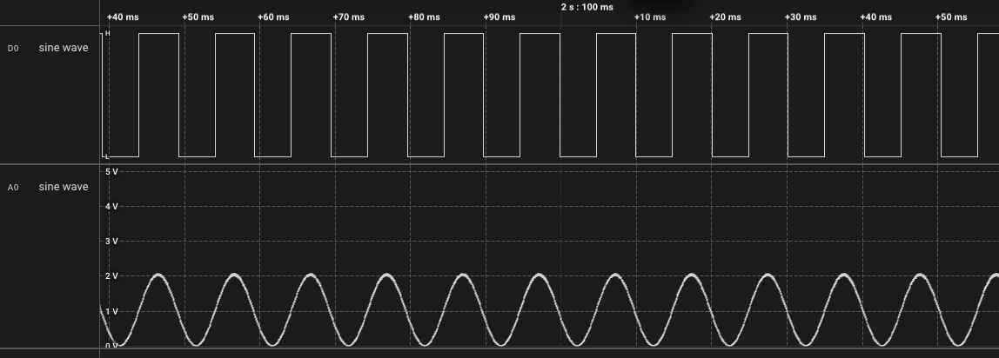

Using 10-Bit DAC for Generating Analog Signals


1
2
3
4
5
6
7
8
9
10
11
12
13
14
15
16
17
18
19
20
21
22
23
24
25
26
27
28
29
30
31
32
33
34
35
36
37
38
39
40
41
42
43
44
45
46
47
48
49
50
51
52
53
54
55
56
57
58
59
60
61
62
63
64
65
66
67
68
69
70
71
72
73
74
75
76
77
78
79
80
81
82
83
84
85
86
87
88
|
#include <avr/io.h>
#include <avr/interrupt.h>
#include <util/delay.h>
#include <math.h>
#define LSB_MASK 0x03
#define WAVE_STEPS 100 // número de muestras por ciclo
#define WAVE_FREQ 100 // frecuencia final de la onda (Hz)
#define DAC_MAX 1023
uint16_t wave[WAVE_STEPS];
volatile uint8_t waveIndex = 0;
static void sineWave(void) {
for (uint8_t i = 0; i < WAVE_STEPS; i++) {
double x = 2.0 * M_PI * i / WAVE_STEPS;
wave[i] = (uint16_t)(512 + (511 * sin(x))); // 0–1023
}
}
static void triangleWave(void) {
uint16_t half = WAVE_STEPS / 2;
for (uint8_t i = 0; i < WAVE_STEPS; i++) {
if (i < half)
wave[i] = (uint16_t)(DAC_MAX * ((double)i / half));
else
wave[i] = (uint16_t)(DAC_MAX * (1.0 - ((double)(i - half) / half)));
}
}
static void sawtoothWave(void) {
for (uint8_t i = 0; i < WAVE_STEPS; i++) {
wave[i] = (uint16_t)(DAC_MAX * ((double)i / WAVE_STEPS));
}
}
static inline void clk_init(void){
_PROTECTED_WRITE(CLKCTRL.OSCHFCTRLA, CLKCTRL_FRQSEL_24M_gc);
_PROTECTED_WRITE(CLKCTRL.MCLKCTRLA, CLKCTRL_CLKSEL_OSCHF_gc);
_PROTECTED_WRITE(CLKCTRL.MCLKCTRLB, 0);
}
static void vref_init(void) {
/* Select the 2.048V Internal Voltage Reference for DAC */
VREF.DAC0REF = VREF_REFSEL_2V048_gc | VREF_ALWAYSON_bm; /* Set the Voltage Reference in Always On mode */
_delay_us(50); // Wait VREF start-up time.
}
static void dac_init(void) {
PORTD.PIN6CTRL = PORT_ISC_INPUT_DISABLE_gc; // deshabilita entrada digital
DAC0.CTRLA = DAC_ENABLE_bm | DAC_OUTEN_bm; // salida PD6 activa
}
static void dac_set(uint16_t value) {
DAC0.DATAL = (value & LSB_MASK) << 6;
DAC0.DATAH = value >> 2;
}
static void tcb0_init(void) {
// f_ISR = WAVE_FREQ * WAVE_STEPS = 100 * 100 = 10 kHz
// Periodo = 24e6 / 10e3 = 2400
TCB0.CCMP = 2400 - 1; // 10 kHz interrupción
TCB0.CTRLA = TCB_CLKSEL_DIV1_gc | TCB_ENABLE_bm;
TCB0.INTCTRL = TCB_CAPT_bm;
}
ISR(TCB0_INT_vect) {
dac_set(wave[waveIndex++]);
if (waveIndex >= WAVE_STEPS)
waveIndex = 0;
TCB0.INTFLAGS = TCB_CAPT_bm;
}
int main(void) {
clk_init();
vref_init();
dac_init();
sineWave();
// triangleWave();
// sawtoothWave();
tcb0_init();
sei();
while (1) {}
}
|